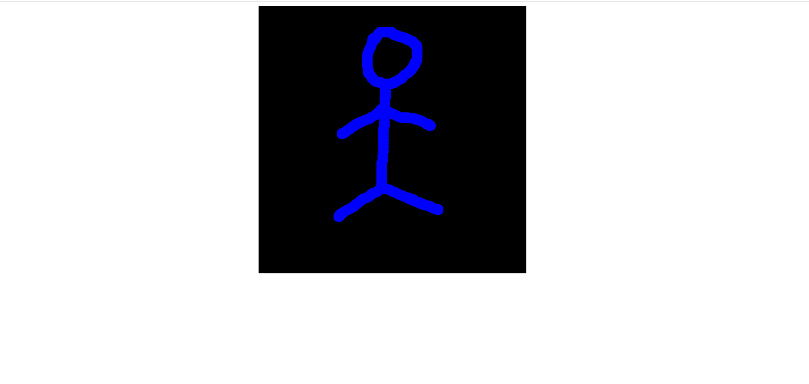

Ahmad Hamze
September 18, 2021
A live pictionary using websockets
Introduction
This is a project that uses websockets to create a drawing on a page and copy this drawing to another page instantly.
If you’ve never heard of websockets before, here’s the main idea:
-
You send data from your browser to a server using a “socket” which is a real-time connection that can send data back and forth.
-
There is another computer that is connected to the server and will receive the data from it also using a socket.
In this project we will be using the same computer, however, we will open multiple tabs in the browser all on the same localhost where the server will be listening.
Stack
To create the drawing I used the p5.js library, express for the server, and the socket.io library which handles the websockets. Node will host the p5 sketch as a static file (this topic won’t be covered here).
You can find this project on GitHub, here you can find the complete code.
I recommend that you take a look if you’re not familiar with node and express, I won’t be covering these topics.
You can also find instructions on how to run the project locally on your computer.
Initialization
The first thing we need to do is to enable the use of websockets on the front-end. The easiest way to enable the websockets is to use the following cdn:
<script src="https://cdn.socket.io/4.1.2/socket.io.min.js" integrity="sha384-toS6mmwu70G0fw54EGlWWeA4z3dyJ+dlXBtSURSKN4vyRFOcxd3Bzjj/AoOwY+Rg" crossorigin="anonymous"></script>
It’s added within the head tag of the main html file (the file hosting the p5 sketch).
The next step is to create a websocket and to connect it to the port where the backend will be listening (this will be done shortly).
This is the code doing so, it’s found in sketch.js:
let socket;
function setup() {
/* sketch code */
socket = io.connect("http://localhost:5000");
}
The setup function is specific to the p5 library check the documentation for more information
Drawing and sending the sketch to the back-end
Now, we want a function to draw a sketch using the mouse and we want to send this drawing to the back-end in order to send it back to the front-end again.
Fundamentally a drawing is a bunch of disks each having an x,y coordinate on the sketch. These coordinates are the data that should be sent using the sockets.
The following function “pen” takes care of this, it allows drawing using the mouse and sends the data (the (x,y) coordinates) to the back-end.
Notice this line
socket.emit("coordinates", data);the data are sent under the name of “coordinates” this will be useful when receiving the data in the back-end.
function pen() {
noStroke();
if (mouseIsPressed) {
fill(0, 0, 255);
ellipse(mouseX, mouseY, 20, 20);
const data = {
x: mouseX,
y: mouseY,
};
// Sending the data under the name "coordinates"
socket.emit("coordinates", data);
}
}
Receiving the data in the back-end and sending it back to the front-end
We need to establish a connection and “grab” the data coming from the front-end.
Remember that the data are emitted by the socket under the name “coordinates”, so to grab them we will use
socket.on("coordinates", (data) => {...})
within the call-back we will send back the data to the front-end again but not to the same client that sent it originally, we don’t want to redraw the same sketch onto the same client.
We will use the “broadcast” flag, it sets a modifier for the emission which makes sure the data will only be broadcasted to every socket but the sender.
Here is the complete code for receiving and sending back data.
Notice that we are sending back the data under the same name “coordinates”.
const io = socket(server);
io.sockets.on("connection", (socket) => {
console.log(`new connection: ${socket.id}`);
// Receiving the data from the front-end
socket.on("coordinates", (data) => {
console.log(data);
// Sending back the coordinates to the client, notice this way the
// client sending the coordinates will not receive back what it already sent.
socket.broadcast.emit("coordinates", data);
});
});
Receiving the data from the back-end and drawing a new sketch
This is the final stage, we will create a new function that draws a new sketch using the data received from the backend (the (x,y) coordinates).
To do so we will listen to the incoming event emitted from the back-end, we will add the listener to the “setup” function, here is the final version:
function setup() {
const canvas = createCanvas(500, 500);
canvas.parent("container");
background(0);
socket = io.connect("http://localhost:5000");
// the socket receiving data from the back-end
socket.on("coordinates", newDrawing);
}
The “newDrawing” argument is a function that we will define, it draws the new sketch with a different color.
function newDrawing(data) {
noStroke();
fill(0, 255, 0);
ellipse(data.x, data.y, 20, 20);
}
Result
That’s it all is done, run the server and open two or more tabs on http://localhost:5000, draw anything on a canvas (it will be blue), you will see the same drawing on the other canvases with a different color (green).
The initial drawing

The drawing made by the websocket